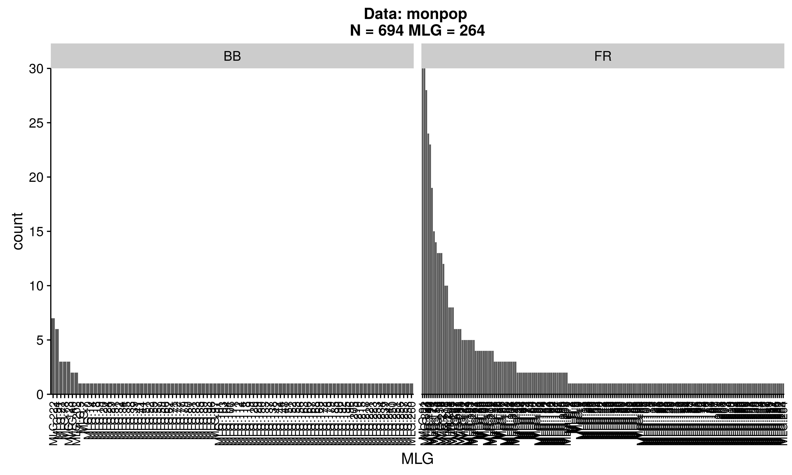

In the previous chapter, we introduced basic summary statistics that can be calculated using poppr. For this chapter, we want to specifically focus on how to evaluate genotypic richness, diversity, and evenness in your data. In this example, we’ll examine the monpop microsatellite data for 13 loci of 694 individuals of the haploid fungal pathogen Monilinia fructicola that infects peach flowers and fruits in commercial orchards.
For this example, we can explore the hypothesis that the population that infects flowers and yields blighted blossoms (BB) is from a more genetically diverse pool (being a product of overwintering, sexual recombinants), than the population that infects and causes fruit rots (FR), which is likely a product of asexual production from existing infections in the orchard. As such, we can ask the following questions:
For the analysis, we need to read in the data, specify the stratifications in the data, and then set the stratification to symptom so that we can calculate genotypic richness, diversity, and evenness for BB as compared to FR for the entire data set:
library("poppr")
data(monpop)
splitStrata(monpop) <- ~Tree/Year/Symptom
setPop(monpop) <- ~Symptom
monpop##
## This is a genclone object
## -------------------------
## Genotype information:
##
## 264 multilocus genotypes
## 694 haploid individuals
## 13 codominant loci
##
## Population information:
##
## 3 strata - Tree, Year, Symptom
## 2 populations defined - BB, FRTo calculate genotypic richness, diversity, and evenness, we can use the poppr function:
(monpop_diversity <- poppr(monpop))## Pop N MLG eMLG SE H G lambda E.5 Hexp Ia rbarD File
## 1 BB 113 94 94.0 0.00 4.40 61.7 0.984 0.755 0.584 0.591 0.0493 monpop
## 2 FR 581 191 66.6 4.17 4.58 53.4 0.981 0.543 0.588 0.809 0.0679 monpop
## 3 Total 694 264 73.6 4.33 4.89 65.0 0.985 0.486 0.589 0.729 0.0611 monpopThis shows us several summary statistics:
| Abbreviation | Statistic |
|---|---|
Pop |
Population name. |
N |
Number of individuals observed. |
MLG |
Number of multilocus genotypes (MLG) observed. |
eMLG |
The number of expected MLG at the smallest sample size ≥ 10 based on rarefaction |
SE |
Standard error based on eMLG. |
H |
Shannon-Wiener Index of MLG diversity (Shannon, 2001). |
G |
Stoddart and Taylor’s Index of MLG diversity (Stoddart & Taylor, 1988). |
lambda |
Simpson’s Index (Simpson, 1949). |
E.5 |
Evenness, \(E_5\) (Pielou, 1975; Ludwig & Reynolds, 1988; Grünwald et al., 2003). |
Hexp |
Nei’s unbiased gene diversity (Nei, 1978). |
Ia |
The index of association, \(I_A\) (Brown, Feldman & Nevo, 1980; Smith et al., 1993). |
rbarD |
The standardized index of association, \(\bar{r}_d\) [@]. |
The number of observed \(MLGs\) is equivalent to genotypic richness. We expect that the BB population would have a higher genotypic richness than the FR population. However, looking at the raw number of MLGs for each symptom type, it shows us the opposite: there are 94 MLGs for BB and 191 MLGs for FR. This discrepancy has to do with the sample size differences, namely \(N = 113\) for BB and \(N = 581\) for FR. A more appropriate comparison is the \(eMLG\) value, which is an approximation of the number of genotypes that would be expected at the largest, shared sample size (\(N = 113\)) based on rarefaction. For BB (\(N = 113\)) the \(eMLG = 94\) and for FR (where \(N\) is set to 113) the \(eMLG\) = 66.6. Thus, genotypic richness is indeed higher in the BB populations than the FR population when considering equal sample sizes.
library("vegan")
mon.tab <- mlg.table(monpop, plot = FALSE)
min_sample <- min(rowSums(mon.tab))
rarecurve(mon.tab, sample = min_sample, xlab = "Sample Size", ylab = "Expected MLGs")
title("Rarefaction of Fruit Rot and Blossom Blight")Diversity measures incorporate both genotypic richness and abundance. There are three measures of genotypic diversity employed by poppr, the Shannon-Wiener index (H), Stoddart and Taylor’s index (G), and Simpson’s index (lambda). In our example, comparing the diversity of BB to FR shows that H is greater for FR (4.58 vs. 4.4), but G is lower (53.4 vs. 61.7). Thus, our expectation that diversity is lower for FR than BB is rejected in the case of H, which is likely due to the sensitivity of the Shannon-Wiener index to genotypic richness in the uneven sample sizes, and accepted in the case of G. To be fair, the sample size used to calculate these diversity measures is different and is therefore not an appropriate comparison.
For an easier statistic to grasp, we have included the Simpson index, which is simply one minus the sum of squared genotype frequencies. This measure provides an estimation of the probability that two randomly selected genotypes are different and scales from 0 (no genotypes are different) to 1 (all genotypes are different). In the data above, we can see that lambda is just barely higher in BB than FR (0.984 vs. 0.981). Since this might be an artifact of sample size, we can explore a correction of Simpson’s index for sample size by multiplying lambda by \(N/(N - 1)\). Since R is vectorized, we can do this for all of our populations at once:
N <- monpop_diversity$N # number of samples
lambda <- monpop_diversity$lambda # Simpson's index
(N/(N - 1)) * lambda # Corrected Simpson's index## [1] 0.9925727 0.9829604 0.9860399Now we can see that, even after correction, Simpson’s index is still higher for BB.
You try it! Can you calculate the clonal fraction for each population (1 - (MLG/N))?
Evenness is a measure of the distribution of genotype abundances, wherein a population with equally abundant genotypes yields a value equal to 1 and a population dominated by a single genotype is closer to zero. In the example above, the BB population has \(E.5 = 0.755\) and the FR population has \(E.5 = 0.543\) . This indicates that the MLGs observed in the BB population are closer to equal abundance than those in the FR population. Indeed, when we look at a distribution of the \(MLGs\) for each symptom type it shows us there are many more unique BB symptoms as compared to the FR symptoms.
mon.tab <- mlg.table(monpop)
Calculating measures of genotypic richness, diversity, and evenness is straightforward to do in poppr. In our example, we were able to perform these calculations with one command. However, the ease of calculating these measures is not an indication of the ease of interpretation, particularly when it comes to measures of diversity. There are a large number of diversity measures available and the measures provided here are those we found most useful.
Brown AHD., Feldman MW., Nevo E. 1980. Multilocus structure of natural populations of Hordeum spontaneum. Genetics 96:523–536. Available at: http://www.genetics.org/content/96/2/523
Grünwald NJ., Goodwin SB., Milgroom MG., Fry WE. 2003. Analysis of genotypic diversity data for populations of microorganisms. Phytopathology 93:738–746. Available at: http://apsjournals.apsnet.org/doi/abs/10.1094/PHYTO.2003.93.6.738
Ludwig JA., Reynolds JF. 1988. Statistical ecology: A primer in methods and computing. Wiley.com.
Nei M. 1978. Estimation of average heterozygosity and genetic distance from a small number of individuals. Genetics 89:583–590. Available at: http://www.genetics.org/content/89/3/583.abstract
Pielou EC. 1975. Ecological diversity. Wiley New York.
Shannon CE. 2001. A mathematical theory of communication. ACM SIGMOBILE Mobile Computing and Communications Review 5:3–55. Available at: http://cm.bell-labs.com/cm/ms/what/shannonday/shannon1948.pdf
Simpson EH. 1949. Measurement of diversity. Nature 163:688. Available at: http://dx.doi.org/10.1038/163688a0
Smith JM., Smith NH., O’Rourke M., Spratt BG. 1993. How clonal are bacteria. Proceedings of the National Academy of Sciences 90:4384–4388. Available at: http://www.pnas.org/content/90/10/4384
Stoddart JA., Taylor JF. 1988. Genotypic diversity: Estimation and prediction in samples. Genetics 118:705–711. Available at: http://www.genetics.org/content/118/4/705